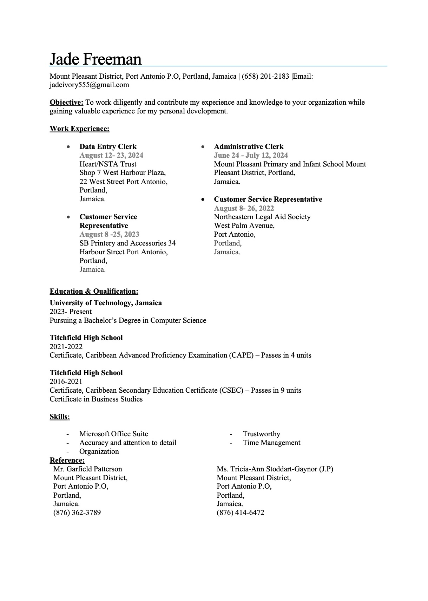
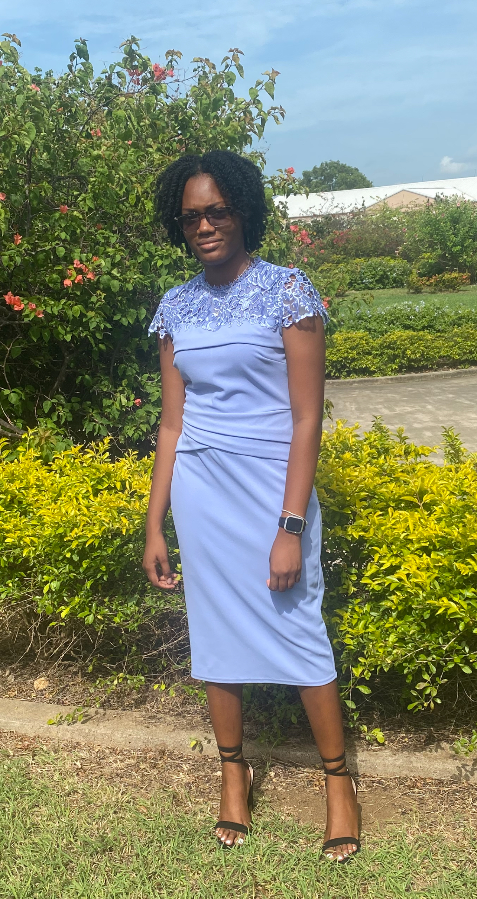

Jade Freeman
Web Programming Portfolio
Professional
Navigations
Resume

Vision Statment
"To be a transformative force in my field,
inspiring others to achieve their full potential through innovation,
integrity, authenticity, and a passion for excellence."

Mission Statment
"To foster a balanced and meaningful life by
by cultivating professional growth, building strong relationships,
and making a positive impact on my community through dedicated efforts."
Career Aspirations Post-University
Career Choice: Software Engineer
- Skills:
-
- Soft Skills:
- Analytical Thinking: To troubleshoot, design, and improve complex applications.
- Interpersonal Skills: Essential for teamwork, active listening, and conflict resolution.
- Written Communication: Clear documentation for users and developers.
- Creativity: To design innovative solutions and solve unique challenges.
-
- Hard Skills:
- Data Structures & Algorithms: To build efficient, optimized code.
- Software Testing: To plan, test, and deploy systems while fixing defects.
- Programming Languages: Python, C++, C#, Java, JavaScript, SQL
- fundamental languages for writing and managing code
- Core Computer Science Knowledge: Databases, operating systems (Linux, Mac, Windows), networking, and database management systems (SQL).
- Job Requirements:
-
- Understand User Requirements: Design software solutions based on user needs.
- Ensure Security: Build software compliant with security standards and best practices.
- Design Software: Outline the software's functionality and communicate with developers.
- Create Documentation: For users and developers to reference and improve understanding.
- Maintain and Improve Software: Regular testing and updating after the product rollout.
- Qualification:
-
- Bachelor's degree in computer science or related fields (e.g., software engineering).
- Experience:
- Entry-level positions may require knowledge of coding, analytical problem-solving, and creativity.
Top of the page